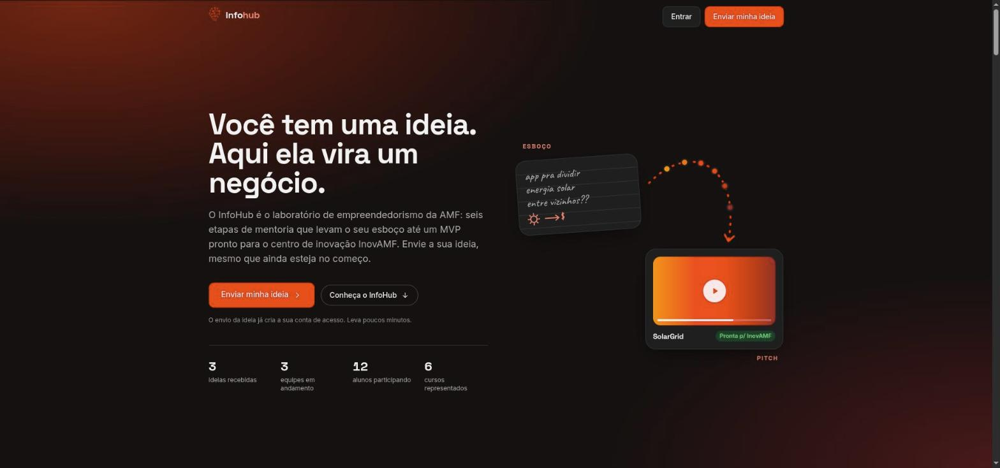

InfoHub InovAMF
Acompanhamento da jornada do empreendedor no InfoHub da AMF até o centro de inovação InovAMF.
6etapas da jornada
3painéis por perfil
Contexto
A jornada do empreendedor do InfoHub, da AMF, até o InovAMF. Projeto da disciplina de Arquitetura de Sistemas, feito em dupla.
O que fiz
Planejei e executei toda a parte de desenvolvimento; a arquitetura foi pensada em conjunto com a dupla.